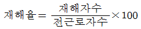
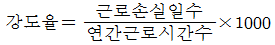
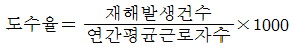
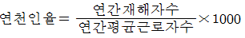
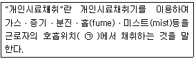

산업위생관리산업기사 (2017-08-26 기출문제)
1과목: 산업위생학 개론
1. 육체적 근육노동 시 특히 주의하여 보급해야 할 비타민의 종류는?
- 비타민 B1
- 비타민 B2
- 비타민 B6
- 비타민 B12
(정답률: 88%)

2. 1000Hz에서 읍압수준(dB)을 기준으로 하여 등감곡선을 나타내는 단위를 무엇이라고 하는가?
- Hz
- sone
- phon
- cone
(정답률: 67%)
3. 우리나라의 작업환경측정 대상 유해인자 중 소음의 측정방법에 대한 설명으로 틀린 것은?
- 소음계의 청감보정회로는 A특성으로 행해야 한다.
- 소음계 지시침의 동작은 빠른(Fast) 상태로 한다.
- 소음계의 지시치가 변동하지 않는 경우에는 해당 지시치를 그 측정점에서의 소음수준으로 한다.
- 소음이 1초 이상의 간격을 유지하면서 최대음압수준이 120dB(A) 이상의 소음인 경우에는 소음수준에 따른 1분 동안의 발생횟수를 측정하여야 한다.
(정답률: 87%)
4. 노동의 적응과 장애에 대한 설명으로 틀린 것은?
- 환경에 대한 인체의 적응에는 한도가 있으며 이러한 한도를 허용기준 또는 노출기준이라 한다.
- 외부의 환경변화와 신체활동이 반복되거나 오래 계속되어 조절기능이 숙련된 상태를 순화라고 한다.
- 작업에 따라서 신체 형태와 기능에 국소적 변화가 일어나는 경우가 있는데 이것을 직업성변이라고 한다.
- 인체에 어떠한 자극이건 간에 체내의 호르몬계를 중심으로 한 특유의 반응이 일어나는 것을 적응증상군(適應症狀群)이라 하며 이러한 상태를 스트레스라고 한다.
(정답률: 47%)
5. 어떤 물질의 독성에 관한 인체실험 결과 안전흡수량이 체중(kg) 당 0.2mg 이었다. 체중이 70kg인 사람이 1일 8시간 작업 시 이 물질의 체내흡수를 안전흡수량 이하로 유지하려면 이 물질의 공기 중 농도를 얼마이하로 규제하여야 하겠는가? (단, 작업 시 폐환기율은 1.25m3/hr, 체내 잔류율은 1.0이다.)
- 0.8mg/m3
- 1.4mg/m3
- 2.0mg/m3
- 2.6mg/m3
(정답률: 60%)
6. 특수 건강진단의 실시 주기로 잘못 연결된 것은?
- 벤젠 - 3개월
- 사염화탄소 - 6개월
- 광물성 분진 - 24개월
- N,N-디메틸포름아미드 - 6개월
(정답률: 58%)
7. 산업피로의 예방과 대책으로 적절하지 않은 것은?
- 충분한 수면을 취한다.
- 작업환경을 정리정돈한다.
- 너무 정적인 작업은 동적인 작업으로 전환한다.
- 휴식은 한 번에 장시간 동안 하는 것이 바람직하다.
(정답률: 90%)
8. 세계 최초로 보고된 “직업성 암”에 관한 내용으로 틀린 것은?
- 보고된 병명은 진폐증이다.
- 18세기 영국에서 보고되었다.
- Percivall Pott에 의하여 규명되었다.
- 발병자는 어린이 굴뚝청소부로 원인물질은 검댕(soot)이었다.
(정답률: 81%)
9. 작업장에 존재하는 유해인자와 직업성 질환의 연결이 잘못된 것은?
- 망간 - 신경염
- 분진 - 규폐증
- 이상기압 - 잠함병
- 6가 클롬 - 레이노씨병
(정답률: 80%)
10. 산업보건의 기본적인 목표와 가장 관계가 깊은 것은?
- 질병의 진단
- 질병의 치료
- 질병의 예방
- 질병에 대한 보상
(정답률: 79%)
11. 산업위생의 정의와 가장 거리가 먼 단어는?
- 예측
- 감사
- 측정
- 관리
(정답률: 85%)
12. 중량물 취급에 있어서 미국 NIOSH에서 중량물 최대허용한계(MPL)를 설정할 때의 기준으로 틀린 것은?
- MPL에 해당하는 작업은 L5/S1 디스크에 6400N의 압력을 부하
- MPL에 해당하는 작업이 요구하는 에너지대사량은 5.0kcal/min를 초과
- MPL을 초과하는 작업에서는 대부분의 근로자들에게 근육ㆍ골격 장애가 발생
- 남성 근로자의 50%미만과 여성 근로자의 10%미만에서만 MPL수준의 작업수행이 가능
(정답률: 78%)
13. 어떤 작업의 강도를 알기 위하여 작업 시 소요된 열량을 파악한 결과 3500kcal로 나타났다. 기초대사량이 1300kcal, 안정 시 열량이 기초대사량의 1.2배인 경우 작업대사율(RMR)은 약 얼마인가?
- 0.82
- 1.22
- 1.31
- 1.49
(정답률: 72%)
14. 젊은 근로자에 있어서 약한 손(오른손잡이 경우 왼손)의 힘은 평균 45kp(kilopond)라고 한다. 이런 근로자가 무게 20kg인 상자를 두 손으로 들어 올릴 경우 작업강도(% MS)는 약 얼마인가?
- 11.2%
- 16.2%
- 22.2%
- 26.2%
(정답률: 73%)
15. 실내 환경의 공기오염에 따른 건강 장해 용어와 관련이 없는 것은?
- 빌딩증후군(SBS)
- 새집증후군(SHS)
- 복합 화학물질 과민증(MCS)
- VDT 증후군(VDT Syndrome)
(정답률: 80%)
16. 재해의 지표로 이용되는 지수의 산식이 틀린 것은?




(정답률: 84%)
17. 동작경제의 원칙에 해당하지 않는 것은?
- 작업비용 산정의 원칙
- 신체의 사용에 관한 원칙
- 작업장의 배치에 관한 원칙
- 공구 및 설비 디자인에 관한 원칙
(정답률: 66%)
18. 산업안전보건법의 궁극적 목적에 해당되지 않는 내용은?
- 산업재해를 예방
- 쾌적한 작업환경을 조성
- 근로자의 재활을 통한 사업장 복귀
- 근로자의 안전과 보건을 유지ㆍ증진
(정답률: 77%)
19. 영상포시단말기(VDT) 취급근로자 작업관리에 관한 설명으로 틀린 것은?
- 작업 화면상의 시야는 수평선상으로부터 아래로 15도 이상 25도 이하에 오도록 한다.
- 작업장 주변 환경의 조도를 화면의 바탕 색상이 검정색 계통일 때 300럭스 이상 500럭스 이하를 유지한다.
- 단색화면일 경우 색상은 일반적으로 어두운 배경에 밝은 황ㆍ녹색 또는 백색문자를 사용하고 적색 또는 청색의 문자는 가급적 사용하지 않는다.
- 연속작업을 수행하는 근로자에 대해서는 영상표시단말기 적업 외의 작업을 중간에 넣거나 또는 다른 근로자와 교대로 실시하는 등 계속해서 영상표시단말기 작업을 수행하지 않도록 한다.
(정답률: 58%)
20. 산업안전보건법령에서 정하는 특별관리물질이 아닌 것은?
- 납
- 톨루엔
- 벤젠
- 1-브로모프로판
(정답률: 55%)
2과목: 작업환경측정 및 평가
21. 작업환경내의 소음을 측정하였더니 1⑤dB(A)의 소음(허용노출시간 60분)이 20분, 110dB(A)의 소음(허용노출시간 30분)이 20분, 115dB(A)의 소음(허용노출시간 15분)이 10분 발생되었다. 이 때 소음 노출량은 약 몇 % 인가?
- 137
- 147
- 167
- 177
(정답률: 52%)
22. 다음 중 가스크로마토그래피에서 인접한 두 피크를 다르다고 인식하는 능력을 의미하는 것은?
- 분해능
- 분배계수
- 분리관의 효율
- 상대머무름시간
(정답률: 67%)
23. 다음 내용은 고용노동부 작업환경 측정 고시의 일부분이다. ㉠에 들어갈 내용은?

- 호흡기를 중심으로 반경 10cm인 반구
- 호흡기를 중심으로 반경 30cm인 반구
- 호흡기를 중심으로 반경 50cm인 반구
- 호흡기를 중심으로 반경 100cm인 반구
(정답률: 88%)
24. 직경분립충동기와 비교하여 사이클론의 장점으로 틀린 것은?
- 사용이 간편하고 경제적이다.
- 입자의 질량크기별 분포를 얻을 수 있다.
- 시료의 되튐 현상으로 인한 손실염려가 없다.
- 매체의 코팅과 같은 별도의 특별한 처리가 필요 없다.
(정답률: 65%)
25. 유해물질 농도를 측정한 결과 벤젠 6ppm(노출기준 10ppm), 톨루엔 64ppm(노출기준 100ppm), n-헥산 12ppm(노출기준 50ppm)이었다면, 이들 물질의 복합 노출지수 (Exposure Index)는? (단, 상가 작용을 한다고 가정한다.)
- 1.26
- 1.48
- 1.64
- 1.82
(정답률: 76%)
26. 측정 전 여과지의 무게는 0.40mg, 측정 후의 무게는 0.50mg이며, 공기채취유량을 2.0L/min으로 6시간 채취하였다면 먼지의 농도는 약 몇 mg/m3인가? (단, 공시료는 측정 전후의 무게 차이가 없다.)
- 0.139
- 1.139
- 2.139
- 3.139
(정답률: 58%)
27. 알고 있는 공기 중 농도를 만드는 방법인 Dynamic Method에 관한 내용으로 옳지 않은 것은?
- 온습도 조절이 가능하다.
- 만들기 용이하고 가격이 저렴하다.
- 다양한 농도 범위 제조가 가능하다.
- 소량의 누출이나 벽면에 의한 손실을 무시할 수 있다.
(정답률: 70%)
28. 다음 중 실내의 기류측정에 가장 적합한 온도계는?
- 건구온도계
- 흑구온도계
- 카타온도계
- 습고온도계
(정답률: 77%)
29. 근로자의 납 노출을 측정한 결과 8시간 TWA가 0.065mg/m3이었다. 미국 OSHA의 평가방법을 기준으로 신뢰하한값(LCL)과 그에 따른 판정으로 적적한 것은? (단, 시료채취 분석오차는 0.132이고 허용기준은 0.⑤mg/m3이다.)
- LCL=1.168, 허용기준 초과
- LCL=0.911, 허용기준 미만
- LCL=0.983, 허용기준 초과가능
- LCL=0.584, 허용기준 미만
(정답률: 58%)
30. 다음 중 1차 표준기구와 가장 거리가 먼 것은?
- 폐활량계
- 가스치환병
- 건식가스 미터
- 유리 피스톤 미터
(정답률: 75%)
31. 산업환경에서 고열의 노출을 제한하는데 가장 일반적으로 사용되는 지표는? (단, 고용노동부 고시를 기준으로 한다.)
- 수정감각온도
- 습구흑구온도지수
- 8시간 발한 예측치
- 건구온도, 흑구온도
(정답률: 81%)
32. 다음 중 불꽃방식의 원자흡광광도계(AAS)의 장단점에 관한 설명으로 가장 거리가 먼 것은?
- 작업환경 중 유해금속 분석을 할 수 있다.
- 분석시간이 흑연로장치에 비하여 적게 소요된다.
- 고체시료의 경우 전처리에 의하여 매트릭스를 제거해야 한다.
- 적은 양의 시료를 가지고 동시에 많은 금속을 분석할 수 있다.
(정답률: 52%)
33. 아스만통풍건습계의 습구온도 측정시간 기준으로 옳은 것은? (단, 고용노동부 고시를 기준으로 한다.)
- 5분 이상
- 10분 이상
- 15분 이상
- 25분 이상
(정답률: 70%)
34. 다음 중 석면의 농도를 표시하는 단위로 옳은 것은? (단, 고용노동부 고시를 기준으로 한다.)
- 개/cm3
- L/m3
- mm/ℓ
- cm/m3
(정답률: 90%)
35. 다음 중 가스크로마토그래프(GC)를 이용하여 유기용제를 분석할 때 가장 많이 사용하는 검출기는?
- 불꽃이온화검출기
- 전자포획검출기
- 불꽃광도검출기
- 열전도도검출기
(정답률: 69%)
36. 다음 중 작업환경측정방법에서 전작업시간을 일정시간별로 나누어 여러 개의 시료를 채취하는 방법은?
- 단시간 시료채취
- 무작위 시료채취
- 부분적 연속 시료채취
- 전작업시간 연속시료채취
(정답률: 67%)
37. 다음 중 가스크로마토그래피에서 이동상으로 사용되는 운반기체의 설명과 가장 거리가 먼 것은?
- 운반기체는 주로 질소와 헬륨이 사용된다.
- 운반기체를 기기에 연결시킬 때 누출부위가 없어야 하고 불순물을 제거할 수 있는 트랩을 장치한다.
- 운반기체의 선택은 분석기기 지침서나 NIOSH공정시험법에서 추천하는 가스를 사용하는 것이 바람직하다.
- 운반기체는 검출기ㆍ분리관 및 시료에 영향을 주지 않도록 불활성이고 수분이 5%미만으로 함유되어 있어야 한다.
(정답률: 69%)
38. 시료채취방법에 따라 분류할 때, 활성탄관의 사용이 속하는 방법은?
- 직접포집법
- 액체포집법
- 여과포집법
- 고체포집법
(정답률: 52%)
39. 실리카겔관이 활성탄관에 비해 갖는 장점으로 옳지 않은 것은?
- 활성탄관에 비해서 수분을 잘 흡수한다.
- 유독한 이황화탄소를 탈착용매로 사용하지 않는다.
- 극성물질을 채취한 경우 물, 메탄올 등 다양한 용매로 쉽게 탈착된다.
- 추출액이 화학분석이나 기기분석에 방해물질로 작용하는 경우가 많지 않다.
(정답률: 42%)
40. 원자흡광분석기에서 어떤 시료를 통과하여 나온 빛의 세기가 시료를 주입하지 않고 측정한 빛의 세기의 50%일 때 흡광도는 약 얼마인가?
- 0.1
- 0.3
- 0.5
- 0.7
(정답률: 73%)
3과목: 작업환경관리
41. 다음 중 피부를 통하여 인체로 침입하는 대표적인 유해물질은?
- 라듐
- 카드뮴
- 무기수은
- 사염화탄소
(정답률: 50%)
42. 다음 중 유해작업환경 개선 원칙 중 대체의 방법과 가장 거리가 먼 것은?
- 시설의 변경
- 공정의 변경
- 유해물질 변경
- 작업자의 변경
(정답률: 81%)
43. 방진마스크의 여과효율을 검정할 때 일반적으로 사용하는 먼지는 약 몇 ㎛인가?
- 0.03
- 0.3
- 3
- 30
(정답률: 76%)
44. 다음 중 열사병에 관한 설명과 가장 거리가 먼 것은?
- 신체내부의 체온조절계통이 기능을 잃어 발생한다.
- 일차적인 증상은 많은 땀의 발생으로 인한 탈수, 습하고 높은 피부온도 등이다.
- 체열방산을 하지 못하여 체온이 41℃에서 43℃까지 상승할 수 있으며 혼수상태에 이를 수 있다.
- 대사열의 증가는 작업부하와 작업환경에서 발생하는 열부하가 원인이 되어 발생하며 열사병을 일으키는 데 크게 관여하고 있다.
(정답률: 56%)
45. 소음원이 큰 작업장의 중앙 바닥에 놓여 있을 때 소음의 방향성(directivity)은?
- 1
- 2
- 3
- 4
(정답률: 57%)
46. 밀폐공간에서 산소결핍이 발생하는 원인 중 산소 소모 원인에 관련 된 내용으로 가장 거리가 먼 것은?
- 금속의 녹 생성과 같은 화학반응
- 제한된 공간 내에서 사람의 호흡
- 용접, 절단, 불과 같은 연소반응
- 저장탱크 파손과 같은 사고에 의한 누설
(정답률: 69%)
47. 다음 중 귀덮개의 장단점으로 옳지 않은 것은?
- 귀마개보다 개인차가 크다.
- 고온의 작업장에서 불편하다.
- 귀에 염증이 있어도 사용할 수 있다.
- 귀덮개는 멀리서도 볼 수 있으므로 사용 여부를 확인하기 쉽다.
(정답률: 82%)
48. 고압작업장에서 감압병을 예방하기 위해서 질소 대신에 무엇으로 대체된 가스를 흡입하도록 해야 하는가?
- 헬륨
- 메탄
- 아산화질소
- 일산화질소
(정답률: 84%)
49. 고열장해 중 신체의 염분손실을 충당하지 못할 떄 발생하며, 이 질환을 가진 사람은 혈중 염분의 농도가 매우 낮기 때문에 염분관리가 중요하다. 다음 중 이 장해는 무엇인가?
- 열발진
- 열경련
- 열허탈
- 열사병
(정답률: 71%)
50. 다음 중 저산소증에 관한 설명으로 옳지 않은 것은?
- 산소결핌에 가장 민감한 조직은 뇌이며, 특히 대뇌 피질이다.
- 예방대책으로 환기, 산소농도측정, 보호구 착용 등이 있다.
- 작업장 내 산소농도가 5%라면 혼수, 호흡감소 및 정지, 6~5분 후 심장이 정지한다.
- 정상공기의 산소함유량은 21%정도이며 질소가 78%, 탄소가스가 1%정도를 차지하고 있다.
(정답률: 75%)
51. 다음 중 저온에서 발생될 수 있는 장해와 가장 거리가 먼 것은?
- 페수종
- 참호족
- 알러지 반응
- 상기도 손상
(정답률: 56%)
52. 입경이 10㎛이고 비중 1.2인 입자의 침강속도는 약 몇 cm/s 인가?
- 0.28
- 0.32
- 0.36
- 0.40
(정답률: 68%)
53. 다음 입자상 물질 중 노출기준의 단위가 나머지와 다른 것은? (단, 고용노동부 고시를 기준으로 한다.)
- 석면
- 증기
- 흄
- 미스트
(정답률: 80%)
54. 다음 중 소음에 대한 설명과 가장 거리가 먼 것은?
- 소음성 난청은 특히 4000Hz에서 가장 현저한 청력손실이 일어난다.
- 1kHz의 순음과 같은 크기로 느끼는 각 주파수별 음압레벨을 연결한 선을 등청감곡선이라고 한다.
- A 특성치와 C 특성치 간의 차이가 크면 저주파음이고, 차이가 작으면 고주파음이다.
- 청감보정회로는 A, B, C 특성으로 구분하고, A 특성은 30폰, B특성은 70폰, C특성은 100폰의 음의 크기에 상응하도록 주파수에 따른 반응을 보정하여 각각 측정한 음압수준이다.
(정답률: 61%)
55. 음의 실측치가 2.0N/m2 일 때 음압수준(SPL)은 몇 dB인가? (단, 기준음압은 0.00002N/m2 이다.)
- 1
- 10
- 100
- 1000
(정답률: 62%)
56. 무거운 저속연장 사용으로 발생하는 진동에 의한 손의 장애에 관한 내용으로 틀린 것은? (단, 가벼운 고속연장과 비교 기준)
- 뼈의 퇴행성 변화는 없다.
- 부종이 때때로 발생할 수 있다.
- 손가락의 창백 현상이 특징적이다.
- 동통은 통상적으로 주증상이 아니다.
(정답률: 76%)
57. 자외선에 대한 설명 중 옳지 않은 것은?
- 100~400nm의 파장 값을 갖는다.
- 400nm의 파장은 주로 피부암을 유발한다.
- 구름이나 눈에 반사되며, 대기오염의 지표로도 사용된다.
- 일명 화학선이라고 하며 광화학반응으로 단백질과 핵산분자의 파괴, 변성작용을 한다.
(정답률: 52%)
58. 다음 중금속 중 미나마타병과 관계가 깊은 것은?
- 납(Pb)
- 아연(ZN)
- 수은(Hg)
- 카드뮴(Cd)
(정답률: 64%)
59. 작업환경관리 대책 중 대체의 내용으로 적절하지 못한 것은?
- TCE 대신에 계면활성제를 사용하여 금속을 세척한다.
- 금속 표면을 블라스트할 때 모래를 대신하여 철구슬을 사용한다.
- 소음이 많이 발생하는 리벳팅 작업 대신 너트와 볼트작업으로 전환한다.
- 세탁 시 화재 예방을 위하여 트리클로로에틸렌 대신 석유나프타를 사용한다.
(정답률: 68%)
60. 다음 중 분진작업장의 작업환경관리 대책과 가장 거리가 먼 것은?
- 습식작업
- 발산원 밀폐
- 방독마스크 착용
- 국소배기장치 설치
(정답률: 78%)
4과목: 산업환기
61. 덕트 내에서 피토관으로 속도압을 측정하여 반송속도를 추정할 때, 반드시 필요한 자료가 아닌 것은?
- 횡단측정 지점에서의 덕트 면적
- 횡단지점에서 지점별로 특정된 속도압
- 횡단측정 지점과 측정시간에서 공기의 온도
- 횡단측정 지점에서의 공기 중 유해물질의 조성
(정답률: 54%)
62. 덕트 설치 시 고려사항으로 적절하지 않은 것은?
- 가급적 원형 덕트를 사용하는 것이 좋다.
- 덕트 연결 부위는 용접하지 않는 것이 좋다.
- 덕트와 송풍기 연결부위는 진동을 고려하여 유연한 재질로 한다.
- 수분이 응축될 경우 덕트 내로 들어가지 않도록 하며 경사나 배수구를 마련한다.
(정답률: 80%)
63. 산업환기에 관한 일반적인 설명으로 틀린 것은?
- 산업환기에서 표준공기의 밀도는 1.203kg/m3 정도이다.
- 일정량의 공기 부피는 절대온도에 반비례하여 증가한다.
- 산업관리에서의 표준상태란 21℃, 760mmHg를 의미한다.
- 산업환기장치 내의 유체는 별도의 언급이 없는 한 표준공기로 취급한다.
(정답률: 74%)
64. 오염물질을 후드로 유입하는데 필요한 기류의 속도는?
- 반송속도
- 속도압
- 제어속도
- 개구면속도
(정답률: 72%)
65. 송풍량이 140m3/min이고, 송풍기의 유효전압이 110mmH2O이다. 이 때 송풍기 효율이 70%, 여유율을 1.2로 할 경우 송풍기의 소요동력은 약 얼마인가?
- 2.6kW
- 3.7kW
- 4.3kW
- 5.4kW
(정답률: 45%)
66. 용해로에 레시버식 캐노피형 국소배기장치를 설치한다. 열상승기류량 Q1은 30m3/min, 누입한계유량비 KL은 2.5라고 할 때 소요송풍량은? (단, 난기류가 없다고 가정한다.)
- 1⑤m3/min
- 125m3/min
- 225m3/min
- 285m3/min
(정답률: 18%)
67. 자유 공간에 떠 있는 직경 20cm인 원형개구후드의 개구면으로부터 20cm 떨어진 곳의 입자를 흡인하려고 한다. 제어풍속을 0.8m/s로 할 때, 덕트에서의 속도(m/s)는 약 얼마인가?
- 7
- 11
- 15
- 18
(정답률: 43%)
68. 후드의 압력손실 계수(Fh)가 0.8이고, 속도압(VP)이 4.5mmH2O라면, 이 때 후드의 정압(mmH2O)은 얼마인가?
- 7.1
- 8.1
- 10.2
- 11.2
(정답률: 49%)
69. 환기시스템에서 덕트의 마찰손실에 대한 설명으로 틀린 것은? (단, Darcy - Weisbach 방정식 기준이다.)
- 마찰손실은 덕트의 길이에 비례한다.
- 마찰손실은 덕트 직경에 반비례한다.
- 마찰손실을 속도 제곱에 반비례한다.
- 마찰손실은 Moody chart에서 구한 마찰계수를 적용하여 구한다.
(정답률: 50%)
70. 레이놀드(Reynolds)수르르 구할 떄, 고려되어야 할 요소가 아닌 것은?
- 유입계수
- 공기밀도
- 공기속도
- 덕트의 직경
(정답률: 46%)
71. 유해작용이 다르고, 서로 독립적인 영향을 나타내는 물질 3종류를 다루는 작업장에서 각 물질에 대한 필요 환기량을 계산한 결과 120m3/min, 150m3/min, 180m3/min이었다. 이 작업장에서의 필요 환기량은 얼마인가?
- 120m3/min
- 150m3/min
- 180m3/min
- 450m3/min
(정답률: 66%)
72. 분진을 제거하기 위해 사용되는 원심력 집진장치에 관한 설명으로 틀린 것은?
- 주로 원심력이 작용한다.
- 사이클론에는 접선 유입식과 축류 유입식이 있다.
- 현장에서 전처리용 집진장치로 널리 이용된다.
- 점성분진을 처리할 경우 내부에 분진이 퇴적되어 압력손실이 감소한다.
(정답률: 56%)
73. 국소배기장치 설계 시 압력손실을 감소시킬 수 있는 방안과 가장 거리가 먼 것은?
- 가능하면 덕트 길이를 짧게 한다.
- 가능하면 후드를 오염원 가까운 곳에 설치한다.
- 덕트 내면은 마찰계수가 적은 재료로 선정한다.
- 덕트의 구부림은 최대로 하고, 구부림의 개소를 증가시킨다.
(정답률: 72%)
74. 후드의 필요 환기량을 감소시키는 방법으로 적적하지 않은 것은?
- 작업장내 방해기류 영향을 최대화한다.
- 후드 개구면에서 기류가 균일하게 분포되도록 설계한다.
- 포집형을 사용할 때에는 가급적 배출오염원에 가깝게 설치한다.
- 공정에서의 발생 또는 배출되는 오염물질의 절대량을 감소시킨다.
(정답률: 69%)
75. 원심력 송풍기 중 터보형에 대한 설명으로 틀린 것은?
- 분진이 다량 함유된 공기를 이송할 때 효율이 높다.
- 정압효율이 다른 원심형 송풍기에 비해 비교적 좋다.
- 송풍량이 증가해도 동력이 증가하지 않는 장점이 있다.
- 후향 날개형(backward curved blade) 송풍기로서 팬의 날이 회전방향에 반대되는 쪽으로 기울어진 형태이다.
(정답률: 34%)
76. 전체환기의 직접적인 목적과 가장 거리가 먼 것은?
- 화재나 폭발을 예방한다.
- 온도와 습도를 조절한다.
- 유해물질의 농도를 감소시킨다.
- 발생원에서 오염물질을 제거할 수 있다.
(정답률: 72%)
77. 공기밀도에 관한 설명으로 틀린 것은?
- 공기 1m3와 물 1m3의 무게는 다르다.
- 온도가 상승하면 공기가 팽창하여 밀도가 작아진다.
- 고공으로 올라갈수록 압력이 낮아져 공기는 팽창하고 밀도는 작아진다.
- 다른 모든 조건이 일정할 경우 공기밀도는 절대온도에 비례하고 압력에 반비례한다.
(정답률: 63%)
78. 여과집진장치의 포집원리와 가장 거리가 먼 것은?
- 확산
- 관성충돌
- 원심력
- 직접차단
(정답률: 63%)
79. 직경이 200mm인 관에 유량이 100m3/min인 공기가 흐르고 있을 때, 공기의 속도는 약 얼마인가?
- 26m/s
- 53m/s
- 75m/s
- 92m/s
(정답률: 57%)
80. 국소배기장치의 자체검사 시 압력 특정과 관련된 장비가 아닌 것은?
- 발연관
- 마노미터
- 피토관
- 드릴과 연성호스
(정답률: 42%)